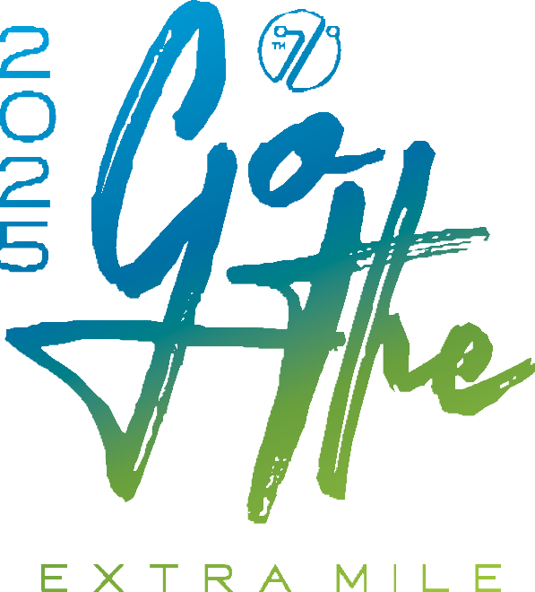

SURAT PERJANJIAN KERJASAMA
No …. / AN-TRC / TO /………/ ………
Pada hari ini ${deskripsi} bertempat di ${province} dilakukan penandatanganan Surat Perjanjian Kerjasama, untuk Pelaksanaan TRY OUT ASESMEN NASIONAL (AN) Tahun Pelajaran ${year} antara:
| Nama | : ${to} |
| Jabatan | : ${jabatan} |
dengan
| Nama | : WIWIED WIJAYANTI SAPUTRO, SH |
| Jabatan | : CHIEF EXECUTIVE OFFICER (CEO) |
PARA PIHAK dalam Perjanjian ini sepakat menjalin Kerjasama Pelaksanaan TRY OUT ASESMEN NASIONAL (AN) Tahun Ajaran ${year}, dengan ketentuan-ketentuan sebagai berikut:
Tanggal ${tanggal}
dengan jumlah peserta sekira ${siswa} [${siswaSpell}] siswa.
Pembayaran dapat dilakukan secara tunai, melalui ${payment} maupun transfer melalui pilihan rekening sbb:
Bank : MANDIRI
Atas Nama : PT. TDW KINARYA INDONESIA
No Rekening : 137 00 702 2020 3
| PIHAK PERTAMA | PIHAK KEDUA |
| (${to}) | ( WIWIED WIJAYANTI SAPUTRO, SH ) |